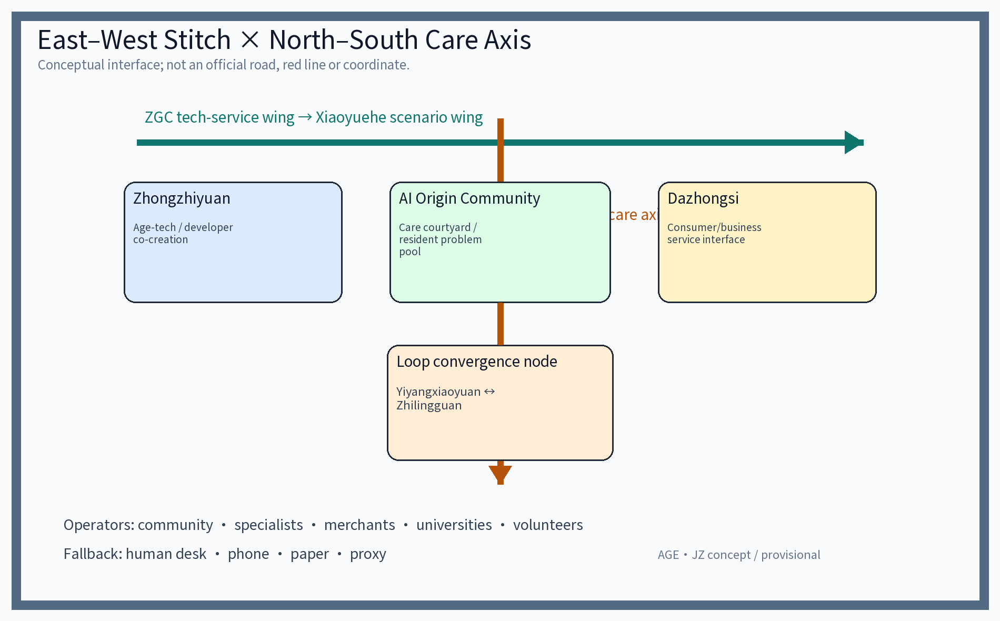
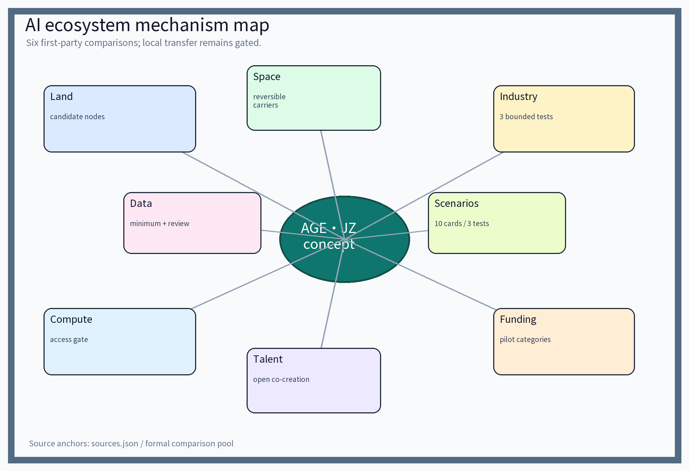
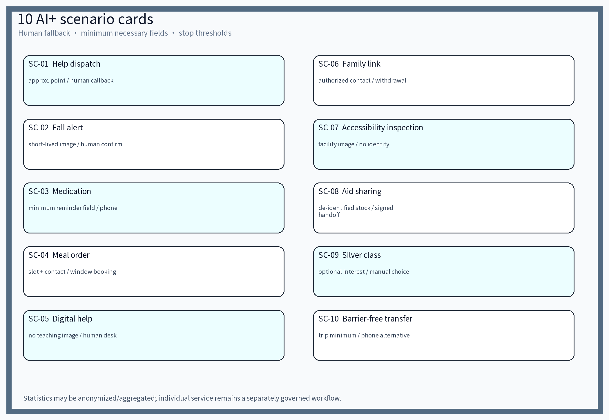
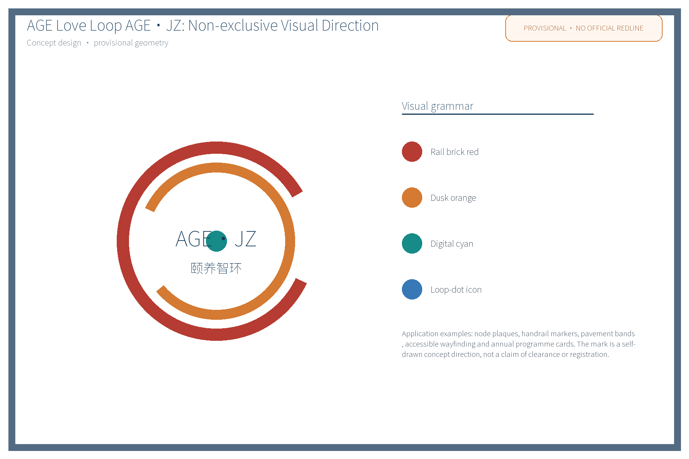

AGE·JZ offline visual package
Conceptual / provisional / bilingual / local assets only
Coverage index
Overall map · three-level scope · key areas · land-use zones · slow mobility · blue-green public space · buildings · renewal projects · AI scenarios · core metrics · task coverage · self-check status · sources · assumptions
Core metrics
site_area_sqm~1,141 haprovisional
green_ratio~11.6%package geometry
public_space_ratio~0.4%package geometry
scenario_card_count10scenario cards
industry_test_scenario_count3industry tests
global_case_count6formal AI ecosystem pool
Figures and gates






